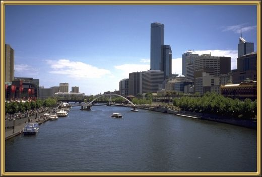

And finally - this is a view over the City of Melbourne
itself. The Central Business District is on the right and the Southbank Complex is
on the left. Southbank has become very much the place to be! particularly on the
weekends. It's a lovely shopping and eating area, within walking distance of the
National Gallery and Flinders St Station - the main train station. The city itself
has several parks worth wandering through, and the top end of Collins Street is a lovely
area.
Photographer: Jean Stokes